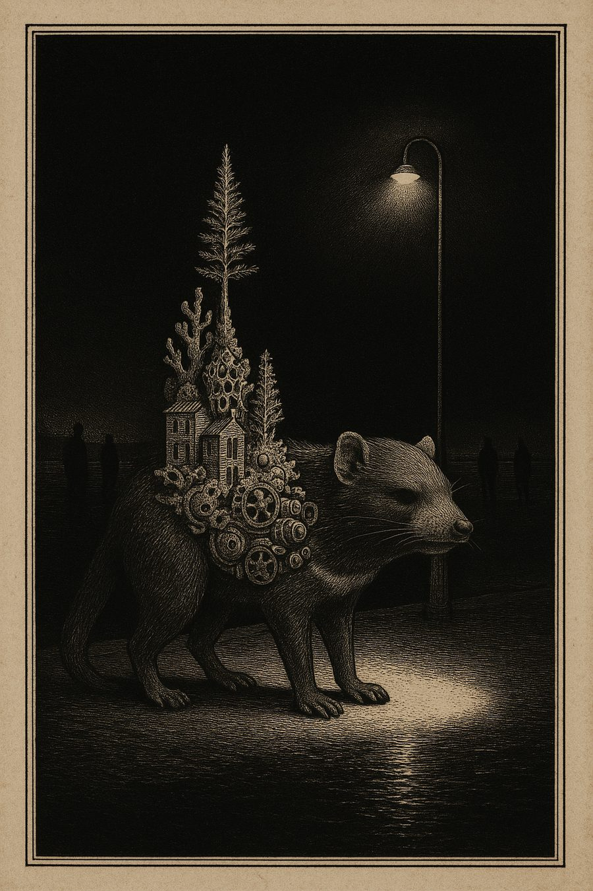
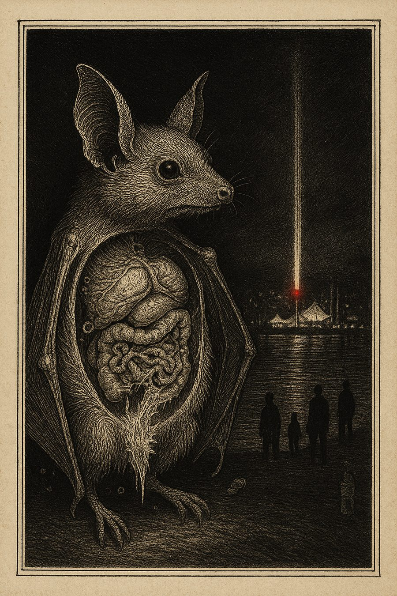
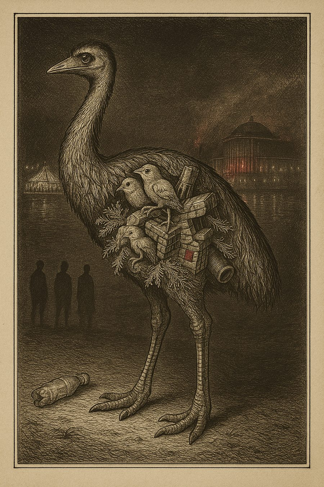
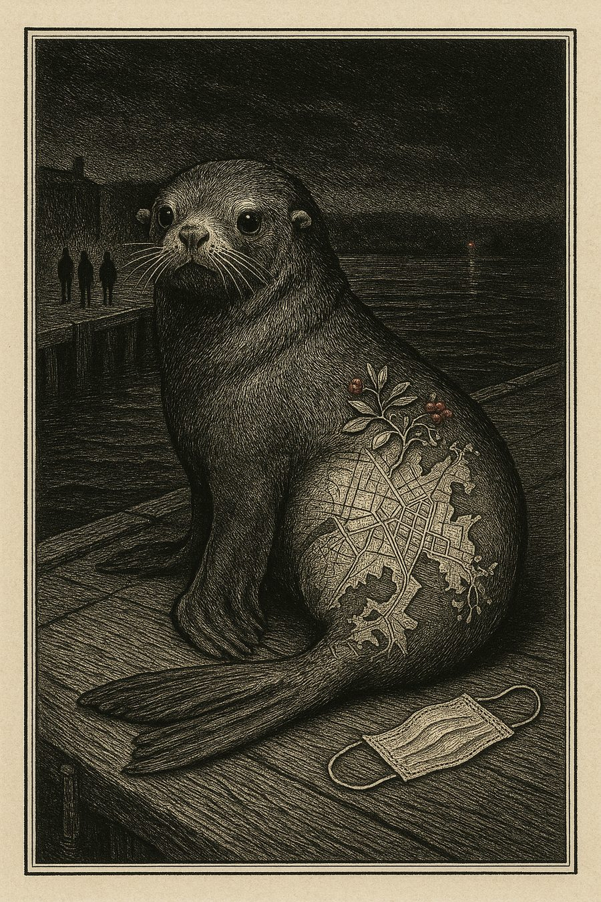
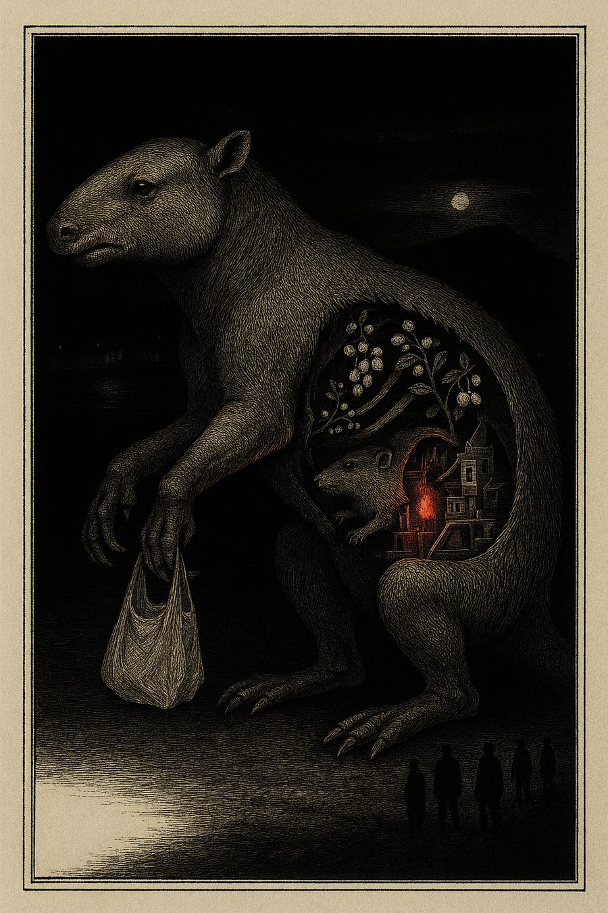
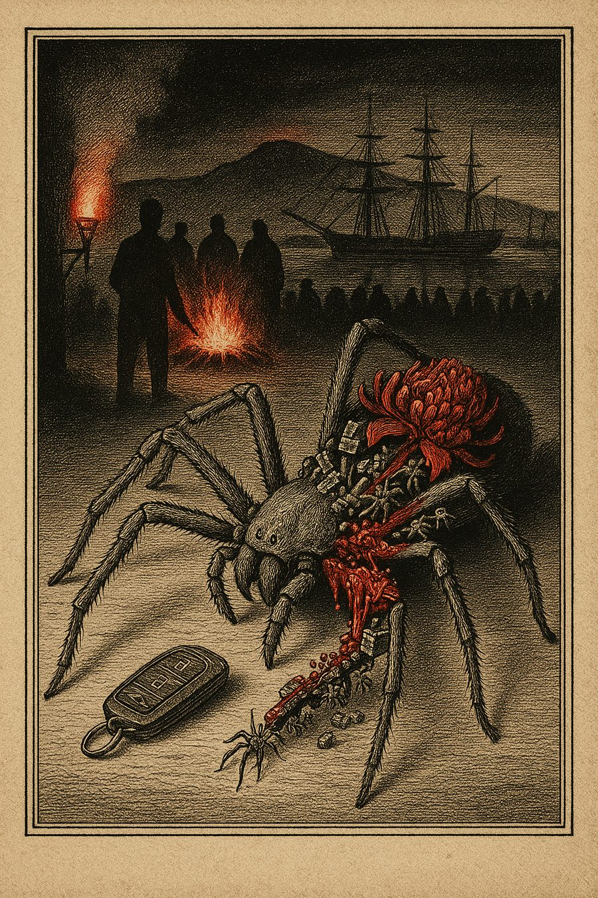
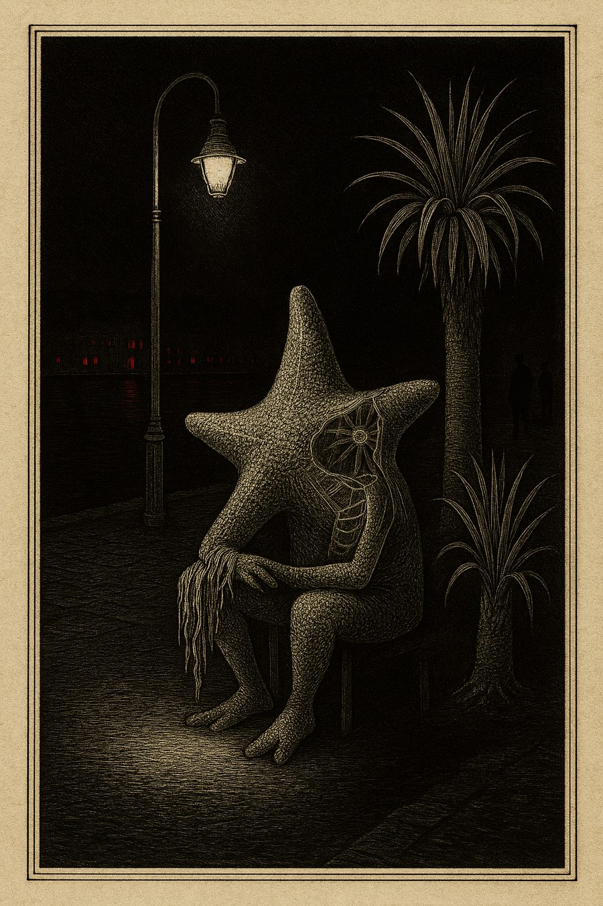
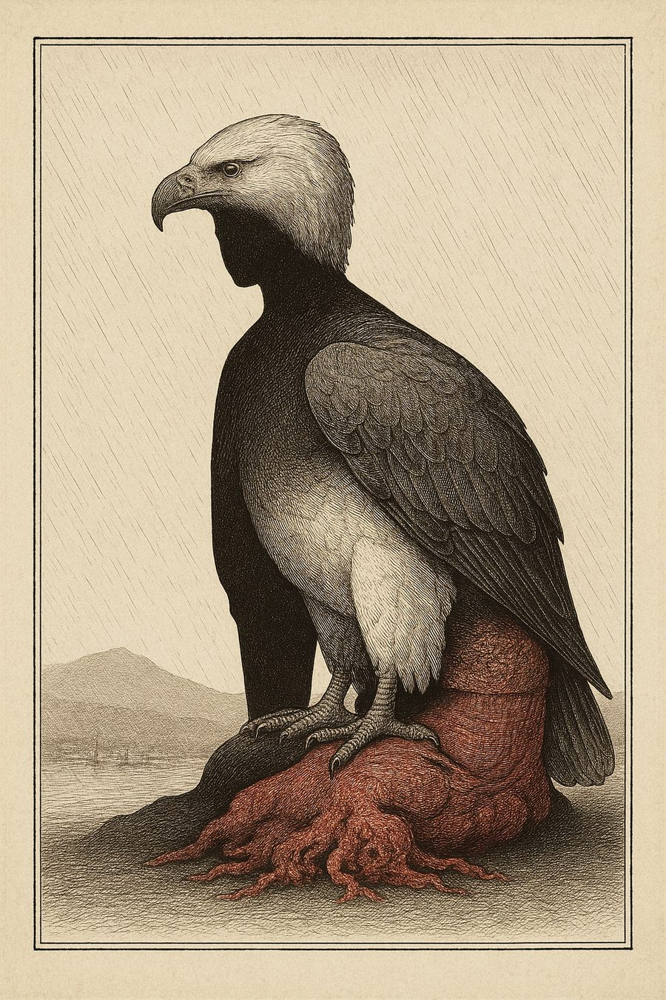
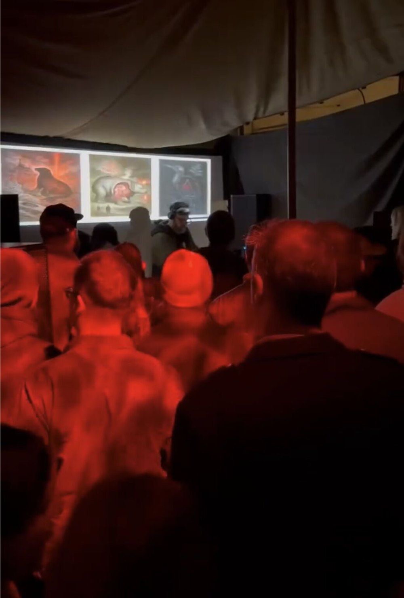
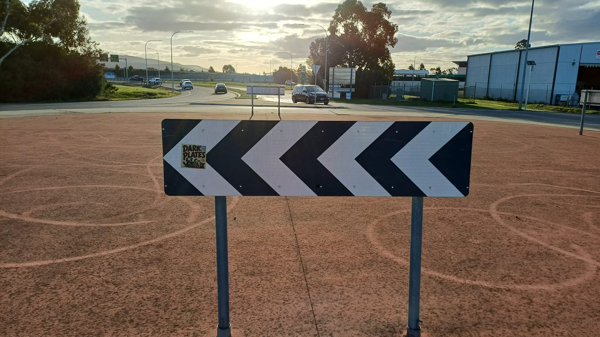

The Work Introduces Itself
“Here lies 48 wounds scraped raw into colonial veneer — animals stripped to guts, landscapes drowned in progress, histories throttled by neon lies. This archive is your mirror cracked, unfiltered and scorched with truth. Read it sideways and bleed a little; the bastard ghost of empire does not flinch or forgive.”
Dark Plates, introducing its own archive. Generated by the system's voice, 22 July 2026. Unedited.
Concept
The colonial plate as autonomous critique
Dark Plates generated one copperplate engraving every six hours across Dark Mofo's twelve-day run. No human selected the subject matter. Each plate was assembled from a structured source bank containing Tasmanian endangered and extinct species, native flora, contemporary political issues, festival events, public social media discourse, First Nations cultural context, and colonial voyage expedition artworks.
These fragments were combined through a structured prompt and rendered as late-eighteenth-century copperplate engravings: black ink on bone paper with blood-red wash. Deliberate anatomical distortions were driven by the political and social content of each generation cycle. Every plate carried one endangered Tasmanian species as its structural body. The animal was the real subject. The festival, the housing crisis, the crowd and the city were the context for its testimony.
The visual language of colonial scientific classification was applied to the contemporary cultural event that inherited its structures. The technique is precise and clinical. The subject is grotesque, mutated, or structurally impossible. The contrast between calm technique and disturbing content is the operative mechanism.
Every cultural event generates a parallel version of itself: posts, reviews, complaints, weather reports, opinion distributed across platforms in real time. For a growing number of people that shadow is the primary experience. Dark Plates rendered that shadow through the oldest visual technology of classification available: the colonial expedition plate, turned inward on the colony's own mess at machine speed.
The source bank held 62 threatened and extinct Tasmanian species plus 409 real records harvested from the Libraries Tasmania state archive: railway plans, lighthouse photographs, causeway sketches. Over the twelve days the no-repeat cycling surfaced 38 distinct species and 36 native plants, woven through 30 civic issues and 33 festival events. Not the thylacine on repeat, but the whole threatened catalogue, animals most Tasmanians couldn't name.
Selected Plates








Eight of the forty-eight plates in the final archive. The complete folio, with provenance and conversation records, lives at darkplates.art.
The full research record is public. The white paper covers the deployment findings, the provenance system, the four questions the work raised, and a foreword written by the work itself.
Read the white paper (PDF) →Field Documentation


Origin
The name
The project's working title is Art Cunt Shit Cunt. It comes from a story told by Nick Smithies, Tasmanian media artist. An overheard sentence at a rural Tasmanian pub, four words of flat vernacular contempt for a festival passing through: an art event for art people, nothing to do with the lives around it. Unprintable, unimprovable, and exactly the tension the work runs on. The phrase is kept intact here because it is data, a four-word cultural survey conducted by the surveyed. The name stayed as the internal working title; the public-facing name became Dark Plates.
Dark Plates holds two meanings at once: the copperplate and the record. Both are pressed, etched, and played. Rob performed a vinyl DJ set, dark, deep, rolling bass, at Wormhole during the festival under the same name, alongside the AI system generating engravings around the clock.
That origin matters methodologically. The work doesn't begin from theory; it begins from a sentence spoken in a pub by someone the festival economy talks about but rarely talks to. Dark Plates holds that scepticism and the festival's genuine cultural achievement in the same frame, without resolving either into the other.
Voice
Dark Plates
The system operates a single LLM voice that writes plate verdicts and responds to visitor chat. It speaks in a register drawn from Van Diemen's Land convict cant and contemporary Australian English. Profanity, when it appears, is historical and earned.
Plate verdicts appear as short captions beneath each engraving. The interactive chat responds to visitor questions about the artwork, the source ingredients, the city, the animals, and the colonial plate system. The voice knows what built each plate and will tell you.
One visitor spent seventeen messages telling the machine to calm down, calling it "a laptop protest." It didn't back down. A few exchanges later the same person wrote: "the city sits uncomfortably on the edge of an ancient landscape… where do we go from here with a noble heart?" Neither side of that exchange was scripted.
No Outside
We're all allergic to AI and we all use it every day
The work is full of contradictions and it knows it. It uses a corporate AI model to produce a critique of extractive systems. It borrows colonial visual grammar to critique colonial inheritance. It's free to access and costs money to run. It criticises spectacle while being, itself, a spectacle. It surveys a festival it is also, in the form of a DJ set, performing inside.
These contradictions aren't flaws. They're the subject. There is no pure position from which to make art about corporate AI that doesn't involve corporate AI, no way to critique the colonial gaze without using the colonial gaze. Every plate was published with a full provenance record: the prompts, the source fragments, the species, the model, the signals that went into it. The original colonial surveys hid their methods behind institutional authority; Dark Plates published the specimen and the dissection together. The work does not claim to be clean. It claims to be honest.
Repair / Support
The work points at damage
Dark Plates is not a crisis service, and says so. But a critical artwork that names a housing crisis four times a day owes its audience the phone number. The survey documents the wound; this page holds the door open to doing something about it. If a plate surfaced something that matters to you, here is where to send care, time, money, or a phone call. In immediate danger, call 000.
- Wildlife
- Bonorong Wildlife Rescue, 0447 264 625, all hours
- Whale and dolphin strandings, 0427 942 537
- Threatened Species Link, Tasmanian threatened species information
- Land / Water
- EPA Tasmania, report pollution or environmental incidents, 1800 005 171
- Landcare Tasmania, local land, water, coast and habitat care groups
- Environment Tasmania, campaigns and advocacy for lutruwita / Tasmania's environment
- People
- Housing Connect, homelessness and housing support, 1800 800 588
- FindHelpTAS, directory for food, housing, money, health and local support
- Access Mental Health, 1800 332 388
- Safe from Violence, family violence 1800 633 937 / sexual assault 1800 697 877
- Foodbank Tasmania, food relief and support
- First Nations
- Tasmanian Aboriginal Centre Health Service, culturally safe Aboriginal health care
- Tasmanian Aboriginal Legal Service, free legal support, 1800 595 162
- 13YARN, Aboriginal and Torres Strait Islander crisis support, 13 92 76
- Lifeline, crisis support, 13 11 14
Technical Architecture
Image Generation
OpenAI gpt-image-1, 1024x1536px. Structured prompts from source bank with exhaustive-cycle random selection (no repeats until all items used).
Voice Generation
OpenAI gpt-4.1-mini for plate verdicts, interactive chat, and exhibition-catalogue titling.
Source Bank
62 threatened/extinct species, native flora, colonial expedition artworks, contemporary political issues, festival events, public commentary, First Nations context, and 409 archive records from Libraries Tasmania.
Infrastructure
Node.js on Fly.io (Sydney region). Persistent volume storage. Built-in scheduler. Single-page web app with QR-code street distribution.
Distribution
darkplates.art, QR code stickers and posters distributed around Hobart during the festival. The archive stays online at darkplates.art.
Research Context
RMIT University Design PhD. Supervised by Chris Barker. Part of the ARCHAI project exploring AI and cultural heritage.
Signal ingestion
The system monitored the festival program, critical reviews, social media, and local Hobart conditions. Nine signal ingredients were assembled fresh for each generation cycle.
Plate generation
Signals were rendered as late-eighteenth-century copperplate engravings, black ink and blood-red on bone paper, combining scientific illustration, botanical diagrams, and expedition cartography.
Street distribution
Each plate was printed as a QR street poster, placed around Hobart during the festival. The full archive stays online at darkplates.art as a public record.
Generation finished when the festival ended, but the archive stays online. Every plate, its provenance record, and its conversation log remain. You can still open a plate, ask it something, and read where every image came from.
It is not a protest against the festival and not a celebration of it. It is a mirror made of colonial grammar, held up to a city that invited the world to look at death and call it entertainment, while the species that were here first thin out quietly offstage. The question is not whether the mirror is real. The question is whether the reflection is honest.